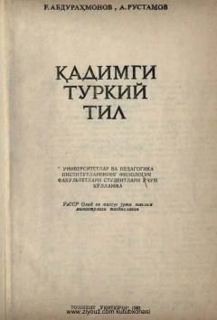

QTQadimgi turkiy til tarixi va yozma yodgorliklari bo'yicha o'quv qo'llanma.
Ushbu qo'llanma universitetlar va pedagogika institutlarining filologiya fakultetlari talabalari uchun mo'ljallangan. Kitobda qadimgi turkiy tilning tarixi, rivojlanish bosqichlari va yozma yodgorliklari ilmiy asosda yoritilgan.